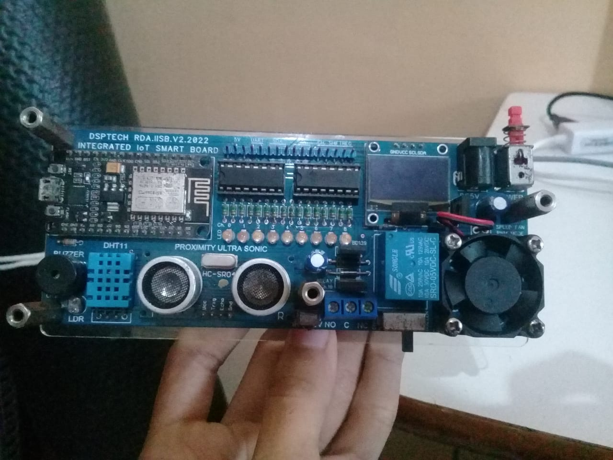

Progress Belajar
Total Jam Belajar
125jam
Kursus Diselesaikan
0kursus
Kursus yang Sedang Dikerjakan

Web Development
Dalam Progress
Fullstack Web Development Bootcamp
Kursus intensif untuk menjadi fullstack developer dengan MERN stack.
Progress
65%
52/80 jam
Lanjutkan

IoT
Dalam Progress
IoT
Belajar prinsip desain, prototyping, dan tools modern untuk IoT.
Progress
40%
24/60 jam
Lanjutkan

Programming
Dalam Progress
Python for Data Science
Belajar Python dari dasar hingga analisis data dengan library populer.
Progress
30%
13.5/45 jam
Lanjutkan
Sedang Dalam Proses
Cloud Computing
Dalam Progress
AWS Cloud
Memahami layanan cloud AWS dan mempersiapkan sertifikasi resmi.
Progress
20%
13/50 jam
Lanjutkan
Platform Belajar
1 kursus
2 kursus
1 kursus
1 kursus